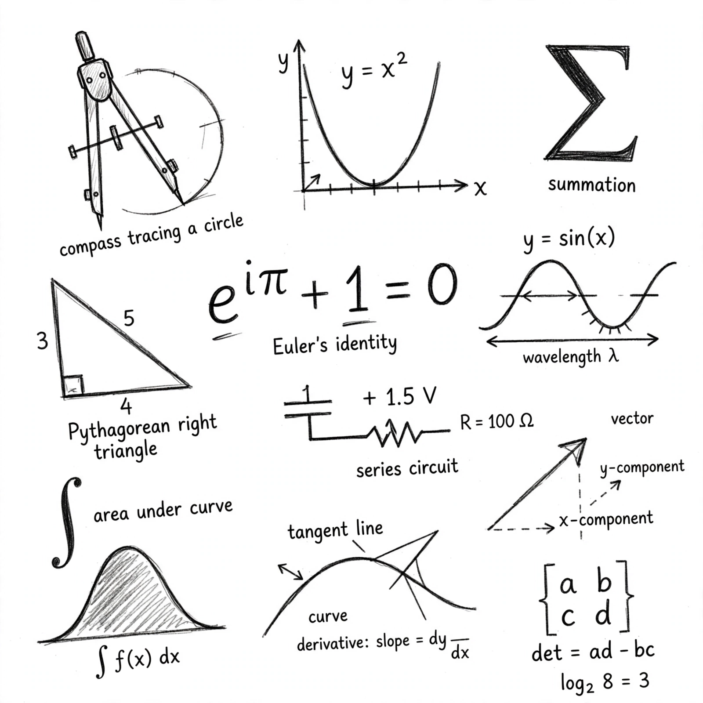

Clases · Etapas 1 y 2 · La Etapa 3 se activa en marzo de 2027
Un profesor particular en tres etapas, no una lista de temas sueltos. Etapa 1, Pre-CBC (semanas 1 a 13): recuperar exactamente las bases que el CBC presupone, con atención especial a las fracciones. Etapa 2, estudio previo del CBC (semanas 14 a 22): las 6 materias (Análisis Matemático A, Álgebra A, Física, Pensamiento Computacional, ICSE e IPC) unidad por unidad según los programas y guías oficiales vigentes, sin recortar contenido. Etapa 3, desde marzo de 2027: acompañamiento al ritmo de tu cursada real, descrito abajo. Cada clase explica desde cero, sin saltar pasos, justifica cada fórmula, resuelve un ejemplo completo, muestra el error habitual y cierra con ejercicios básicos, intermedios y de nivel CBC.
Progresión por dominio: terminar una clase o acertar 6 ejercicios una vez no alcanza para avanzar. Una clase se marca Dominada recién cuando acumulas 12 o más ejercicios de esa clase con 85% o más de aciertos, resolviendo ejercicios nuevos sin depender de la explicación. Tu progreso guarda qué dominas, qué está en práctica, qué queda pendiente y qué errores se repiten, para trabajar sobre ellos.
Esta etapa ya está diseñada en la estructura, pero no es un curso paralelo: se activa cuando empiece tu cursada y el tutor pasa a estudiar contigo al ritmo real del CBC, materia por materia y semana por semana de la cursada.
Cómo va a funcionar: antes de cada clase universitaria, preparar el tema que viene; después, explicar el contenido de la cursada desde el nivel que necesites, repasar y profundizar; resolver contigo las guías de trabajos prácticos ejercicio por ejercicio; registrar tus errores y trabajar específicamente sobre ellos; proponerte ejercicios similares y de mayor dificultad; y preparar parciales y finales con simulacros en formato real.
Regla de oro del acompañamiento: si una clase de la cursada introduce un procedimiento que no dominas, el tutor detecta qué conocimiento previo falta, lo enseña primero (volviendo a la clase de la Etapa 1 o 2 que corresponda) y recién después continúa con el tema de la cursada. El orden y el ritmo los marca tu cursada, no este programa.
Transición entre etapas: pasas de la Etapa 1 a la 2 cuando la base, sobre todo fracciones, figura como Dominada en tu progreso (no por haber visto las clases). Llegas a marzo con la Etapa 2 recorrida, y la Etapa 3 toma el relevo con tu cátedra, tu modalidad (presencial o UBA XXI) y tus guías reales como referencia.
El CBC de Ingeniería Electrónica (Plan 2023) son 6 materias, 608 horas: ICSE (24, 64 h), IPC (40, 64 h), Análisis Matemático A (66, 144 h), Álgebra A (62, 144 h), Física (03, 96 h) y Pensamiento Computacional (90, 96 h), que reemplaza a la Química del plan anterior. Se cursan 3 materias por cuatrimestre y el primer año la asignación es automática: no se eligen. Química ya no va para quien empieza en 2027, aunque folletos viejos la sigan listando.
Cómo se aprueba: con 4 (el 60%). Con promedio de 7 o más entre parciales se promociona sin final (6,50 redondea a 7); en Análisis A y Álgebra A, que tienen 3 parciales en la cursada presencial, la promoción pide que la suma dé 20 o más. Con promedio entre 4 y 6 va el final, con 3 llamados. El recuperatorio solo se habilita si al menos un parcial está aprobado, y no permite promocionar. Aviso honesto: el corte exacto de temas por parcial varía por cátedra (Única, Palacios Puebla, UBA XXI) y por cuatrimestre; los cortes que ves en cada materia son los publicados en 2023-2026 y hay que confirmarlos en la cátedra que te asignen.
Presencial o UBA XXI: las materias son equivalentes pero no idénticas: UBA XXI cursa en línea por el Campus Virtual, con parciales y finales presenciales en Argentina, y programas y parciales propios. Se pueden mezclar modalidades por materia, pero no cursar la misma por las dos vías a la vez. Al 20 de noviembre de 2026, la inscripción a materias de febrero de 2027 figuraba a confirmar: se verifica en cbc.uba.ar y ubaxxi.uba.ar.
El temario sigue el Plan de Estudios de Ingeniería Electrónica, Texto Ordenado Plan 2023 (FIUBA) y los programas y guías de cátedra 2024-2026. Para aprender cada tema más allá del material del CBC, el tutor sigue la forma de explicar de profesores reales: El Traductor de Ingeniería (el porqué antes de la cuenta), MateFacil y JulioProfe (ejercicios paso a paso en pizarra), Khan Academy en español (ruta con práctica), Álgebra Para Todos (álgebra lineal por temas), 3Blue1Brown (intuición visual de cálculo y álgebra lineal), la cátedra de Física del CBC, freeCodeCamp en español, Soy Dalto y MoureDev (Python y lógica de programación), Flor Cutraro en Exapuni (repasos pre-parcial del CBC) y la Prof. Cami (IPC en UBA XXI). Libros de cabecera del CBC: Asimov (Análisis, Álgebra y Física para el CBC), Romero, Breve historia contemporánea de la Argentina (ICSE), y Ambrosini y Beraldi, Pensar la ciencia hoy (IPC).
Plan 2023 de Ingeniería Electrónica (FIUBA) · Guía CBC de FIUBA (MLI) · Física CBC, Cátedra Única · El Traductor de Ingeniería: ruta de matemática · freeCodeCamp: Python desde cero · IPC Cátedra Miguel: actividades
Terminado el CBC, el mismo tutor sigue con el segundo ciclo de la carrera (3648 horas totales en 10 cuatrimestres según el Plan 2023), materia por materia y con el mismo sistema, para acompañarte los seis años completos.
Watch
Ejemplos completos que se dibujan a la izquierda y se explican por escrito a la derecha. La misma solución, dos veces.
Elige un tema. Si aciertas seguido, el nivel sube; si fallas, baja y ves la solución paso a paso. Sin límite de intentos.
Whiteboard
Resuelve a mano, prueba ideas, equivócate sin que nadie mire. Dibuja con el mouse o con el dedo.
Mi progreso
Todo queda guardado en este navegador, en este equipo, y se actualiza solo con cada respuesta, clase y examen.
Sale de tus respuestas en Práctica y Exámenes.
Dominada no es haberla visto: es acumular 12 o más ejercicios de la clase con 85% o más de aciertos, en rondas distintas. Lo demás figura como en práctica, vista sin demostrar o pendiente.
Las clases donde más fallaste y los errores recientes quedan registrados acá para trabajar sobre ellos, no para esconderlos.
Tu progreso vive en este navegador (estado v2). Exporta un respaldo en JSON para guardarlo o pasarlo a otro equipo. Al importar, el archivo se valida campo por campo antes de tocar nada: tipos correctos (números, textos, booleanos, listas, objetos), conteos no negativos, fechas reales, notas y niveles dentro de su rango e ids de clases y habilidades que existen. Si algo no cumple, el respaldo se rechaza entero y tu progreso actual queda intacto. La importación tampoco se da por buena hasta comprobar el guardado: escribe el estado nuevo, lo relee desde el navegador y solo confirma si la relectura coincide. Si la escritura o la comprobación fallan, te avisa del fallo (no del éxito), tu progreso anterior sigue donde estaba y además queda su copia guardada, recuperable con el botón de restaurar copia.
Límite del registro de intentos: se conservan los 8.000 intentos más recientes. Al superarlo se recortan solo los intentos más antiguos del registro crudo. Eso no cambia tu dominio ni tus repasos futuros: el dominio y las fechas de repaso se calculan desde los agregados por habilidad (totales, aciertos, errores, sesiones, días y última fecha de práctica de cada habilidad), que se actualizan con cada intento y nunca se recortan, más la evidencia reciente que queda dentro de la ventana de 8.000. Como cada intento deja su aporte en el agregado antes de cualquier recorte, recortar el registro no mueve ningún estado de dominio ni ninguna fecha de repaso.
Corren sobre las funciones y el localStorage reales de esta página: migración sembrando una clave v1 de verdad, persistencia releyendo tras una recarga simulada, importación real con relectura, validación estricta y fallos de almacenamiento simulados. Antes de tocar el almacenamiento guardan tus claves y tu estado, y los restauran al terminar cada prueba: tu progreso guardado no cambia.
Borra todo el progreso guardado en este navegador.